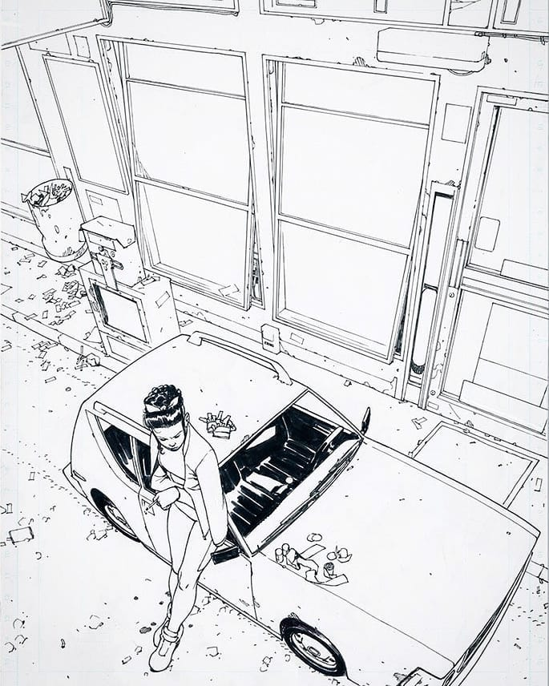
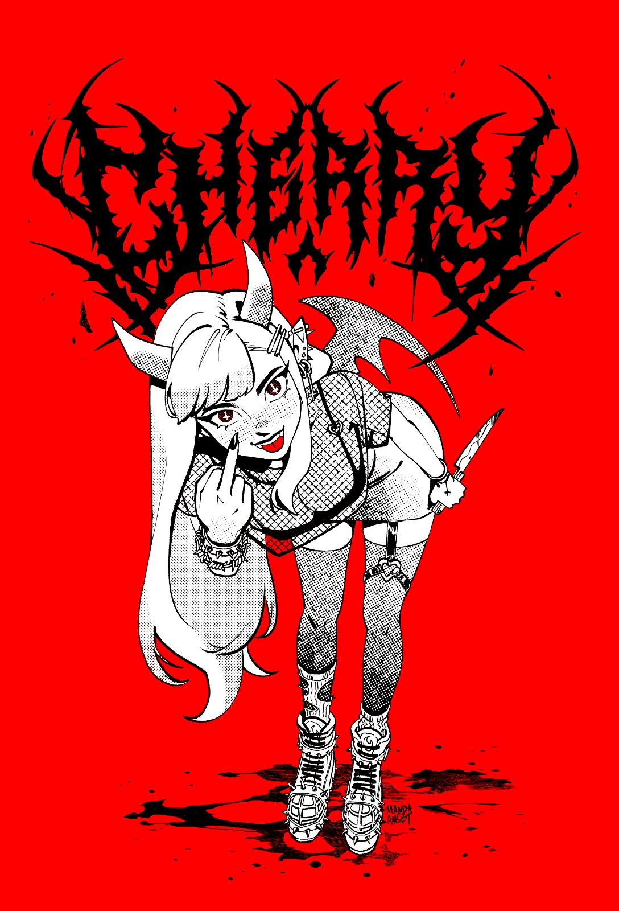

Jeremy Anninos

For my first artist I chose Jeremy Anninos. He's an illustrator at
Riot Games, and has been my personal standard of art quality that I
want to try and meet. His rendering style is the main thing that I
always love about his art, the simplicity of the values and shapes
gives his work such strong confidence that I can only try and achieve.
Bengal

For the 2nd artist, we have Bengal, a comic artist who has worked for
about every single big publisher out there. Marvel, DC, Image, you
name it, he's probably done work for them. The thing I really love
about his art, is his use of 3-point perspective. He makes it look
super easy and his work has so much extra depth and dynamism because
of it.
Manda Schank

For the 3rd artist, we have Manda Schank, a freelance artist in the
games & comics industry. I really like Manda's character design & art
style in general, her art is a bit more hard for me to describe
exactly what I like about it.